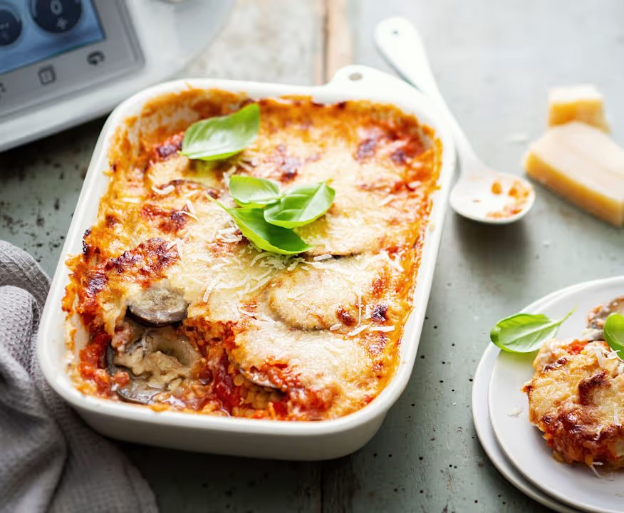

Moussaka de lentilles
Ingrédients
- 200 g de lentilles corail
- 500 g d'eau
- 400 g d'aubergines
- 120 g de parmesan
- 200 g d'oignons
- 3 gousses d'ail
- 180 g de poivron rouge
- 25 g d'huile d'olive
- 400 g de tomates pelées
- 120 g de vin rouge
- 1 c. à s. d'origan
- 1 c. à c. de gingembre en poudre
- 5 pincées de sel
- 0.5 c. à c. de poivre
- beurre
- 30 g de beurre
- 400 g de lait
- 30 g de farine
- 3 pincées de poivre blanc

Préparation
Étape 1
Tremper 200 g de lentilles corail 1h dans 500 g d'eau. Couper 400 g d'aubergines en tranches de 1cm et les répartir dans le Varoma et sur le plateau vapeur, en laissant passer la vapeur.
Étape 2
Mettre 120 g de parmesan dans le bol et râper 10 sec/vitesse 10. Réserver.
Étape 3
Mettre 200 g d'oignons, 3 gousses d'ail et 180 g de poivron rouge et hacher 5 sec/vitesse 5. Ajouter 25 g d'huile d'olive et rissoler 5 min/120ºC/vitesse 1 sans le gobelet.
Étape 4
Ajouter 400 g de tomates pelées avec leur jus et mixer 3 sec/vitesse 5. Ajouter 120 g de vin rouge, 1 c. à s. d'origan, 1 c. à c. de gingembre en poudre, 5 pincées de sel (2 pincées) et 0.5 c. à c. de poivre. Mettre le Varoma en place et cuire à la vapeur 20 min/Varoma/sens inverse/vitesse 1.
Étape 5
Ajouter les lentilles égouttées et cuire 5 min/100ºC/sens inverse/vitesse 2. Pendant ce temps, disposer les aubergines dans un plat beurré avec du beurre et les couvrir de lentilles. Nettoyer le bol.
Étape 6
Préchauffer le four à 200ºC. Mettre 30 g de beurre, 400 g de lait et 30 g de farine dans le bol, cuire la béchamel 8 min/100ºC/vitesse 4.
Étape 7
Ajouter la moitié du parmesan, les 3 pincées de sel restantes et 3 pincées de poivre blanc, mélanger 5 sec/vitesse 4.
Étape 8
Napper de béchamel, saupoudrer du reste de parmesan et gratiner 30min.
Conseils
- Remplacer le trempage par des lentilles précuites.